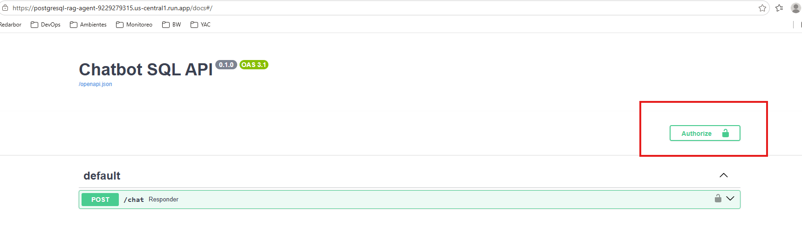
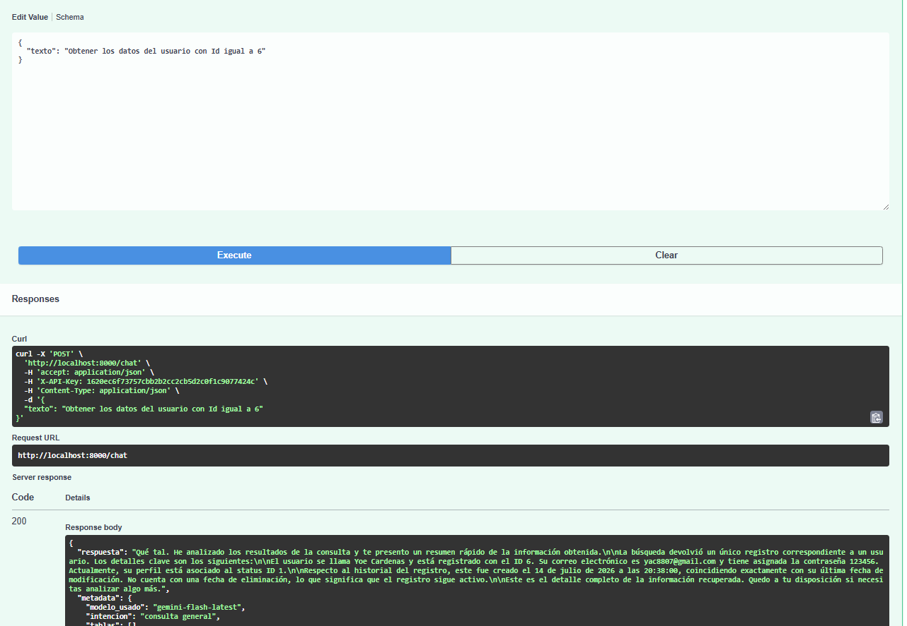

Convierte lenguaje natural en SQL seguro, sobre cualquier PostgreSQL — sin hardcodear un solo esquema.
El problema: equipos no técnicos dependen de un dev o analista para responder preguntas simples sobre sus propios datos. Escribir SQL a mano es lento, propenso a error y no escala con el negocio.
La oportunidad: cualquier empresa con una base PostgreSQL y usuarios no-SQL es cliente potencial — desde equipos de producto hasta soporte y ventas.
Por qué importa: no es una demo de nicho — es un producto que se conecta a la Postgres que ya tenés, sin reescribir nada.
1 / 11
Arranque automático
Si la base de datos indicada en DATABASE_URL no existe, el bootstrap la crea automáticamente, junto con una tabla demo (Usuario, 5 filas) para probar el flujo NL → SQL sin necesidad de tener datos propios todavía.
Por qué importa: cero fricción para evaluar el producto — se prueba en minutos, no en días de setup.
2 / 11
Esquema agnóstico
❌ Antes (enfoque típico)
DDL hardcodeado por dominio de negocio
Cada cliente nuevo = reescribir el agente
✅ postgresql-rag-agent
Introspección en runtime vía information_schema
Se conecta a cualquier Postgres tal cual está
Por qué importa: no es un producto de nicho atado a un dominio — escala horizontalmente a cualquier cliente sin reescribir código.
3 / 11
El grafo LangGraph
Orquestado como un grafo de estados con LangGraph: cada nodo es una función independiente y auditable.
Por qué importa: no es una caja negra de "prompt mágico" — es un pipeline controlado, donde cada paso se puede testear, versionar y depurar por separado.
4 / 11
Seguridad en 2 capas
Embudo de validación: primero un filtro determinístico de keywords, luego análisis semántico con el LLM, y por último una validación estructural del SQL antes de ejecutarlo.
Por qué importa: ningún LLM ejecuta SQL directo contra tu base — siempre hay una capa determinística entre la generación y la ejecución, crítico para adopción empresarial.
5 / 11
Errores: 503 vs 400
Tipo
Código HTTP
Significado
Rechazo de seguridad
400
La pregunta pide algo no permitido (ej. borrar datos)
Error transitorio del LLM
503
Rate limit o timeout de Gemini — no es culpa del usuario
Por qué importa: UX honesta — el usuario final sabe si el sistema dijo "no" por seguridad o falló temporalmente, sin quedar confundido ni perder confianza en el producto.
6 / 11
RAG con ChromaDB
Cada pregunta se convierte en embedding y se compara contra consultas ya resueltas guardadas en ChromaDB, reutilizando contexto en vez de generar SQL desde cero cada vez.
Por qué importa: el sistema mejora con el uso, sin reentrenar nada — cada consulta resuelta enriquece las respuestas futuras.
7 / 11
Neo4j como memoria
Grafo de nodos SQLQuery con relaciones que indexan el historial de consultas SQL exitosas ejecutadas por el agente.
Por qué importa: memoria estructurada y consultable — no solo vectores — permite trazabilidad real de qué se preguntó y qué SQL se generó.
8 / 11
Auth
Autenticación por API Key (APIKeyHeader) protegiendo POST /chat, con botón Authorize visible en Swagger UI (/docs).

Por qué importa: listo para exponerse como servicio real, no un script de laboratorio — auth desde el día uno.
9 / 11
Swagger
Respuesta en lenguaje natural.

10 / 11
Calidad, proceso y cierre
32
tests automatizados
7
changes archivados vía SDD
100%
desplegado en Cloud Run
Cada funcionalidad pasó por propuesta → spec → diseño → tareas → implementación → verificación (SDD), con memoria persistente de decisiones técnicas entre sesiones.
En una frase: un agente de datos production-ready, con seguridad en capas, memoria que mejora con el uso, y un proceso de desarrollo trazable — no un prototipo de fin de semana.